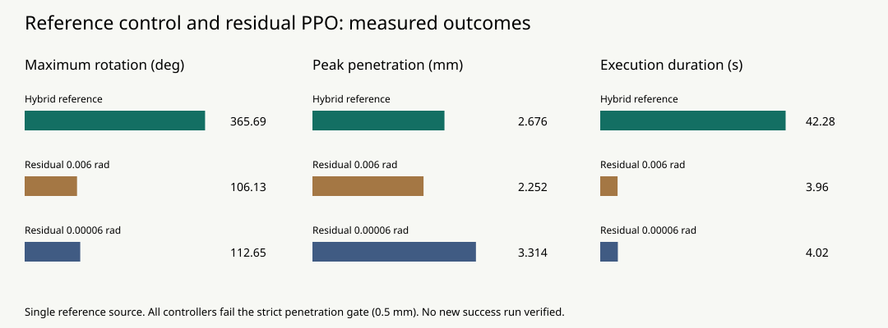

混合专家参考与残差策略优化
物理规划建立动作骨架，PPO完成收尾，有界残差策略学习全流程修正。研究重点是接触切换、控制连续性与物理质量。
实测最大转角365.69°，末5秒稳定对向夹持
实测365.69°、末5秒对向夹持100%。该视频属于混合参考基准，全程最大穿透2.676mm，尚未通过0.5mm严格门槛。
02 / 训练与消融

两次训练各32,768步，所选候选均未完成全程。查看训练检查点评估曲线 · 消融报告
03 / 接触与支撑诊断
连续姿态差分核验转角；对向夹持、消抖重接触和有效支撑交接分别统计。参考记录51次消抖重接触，其中43次伴随支撑；这些计数不等于43次成功指间步态。
04 / 物理质量与复核
整圈、夹持及穿透为不同验收项。失败实验保留，不以视频观感替代几何质量评估；单来源回放不代表泛化性能。